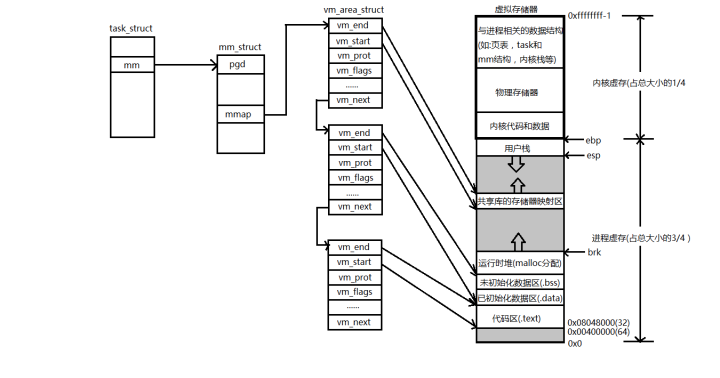

虚拟存储器
今天上午看了《深入理解计算机系统》中关于虚拟存储器的章节，记录如下： 首先说为什么要有虚拟存储器 我个人觉得虚拟存储器的概念是和进程概念一起出现的。在计算机技术发展的早期，只有单道批处理系统，特点是一次只能运行一个进程，只有运行完毕后才能将下一个进程加载到内存里面，所以进程的数据都是直接放在物理内存上的。 到后来发展出…
虚拟存储器
今天上午看了《深入理解计算机系统》中关于虚拟存储器的章节，记录如下：
首先说为什么要有虚拟存储器
我个人觉得虚拟存储器的概念是和进程概念一起出现的。在计算机技术发展的早期，只有单道批处理系统，特点是一次只能运行一个进程，只有运行完毕后才能将下一个进程加载到内存里面，所以进程的数据都是直接放在物理内存上的。
到后来发展出了多道程序系统，它要求在计算机中存在着多个进程，处理器需要在多个进程间进行切换。这时候就出现问题了，链接器在链接一个可执行文件的时候，总是默认程序的起始地址为 0x0，但物理内存上只有一个 0x0 的地址呀？也许你会说「没关系，我们可以在程序装入内存的时候再次动态改变它的地址」好吧我忍了，但如果我的物理内存大小只有 1G,而现在某一个程序需要超过 1G 的空间怎么办呢？你还能用刚才那句话解释吗？
这时候虚拟存储器的作用就发挥出来了，我们为每一个进程分配一个大小为 $2^{32}$个字节（32位系统，下同）的虚拟地址空间，并将这些空间在逻辑上分为各个段，每个段的作用、位置和访问权限都不同，具体可见我的关于进程这篇文章。使用虚拟存储器有如下好处:
- 方便程序的链接和装入工作
- 装入内存后可极大的节省内存
- 方便操作系统对进程的管理
- 安全，一个进程无法访问其他进程的空间
- 可以保证每个进程可用空间为 CPU 的最大寻址空间
- 可以高效的在进程间共享数据，如共享内存
- 其他的想起来在补充哈，反正好处很多的
虚拟存储器的工作原理
当操作系统将一个程序载入内存时，会为其创建一个 PCB 出来，PCB 在 Linux 系统中就是一个task_struct 的内核结构体，其中的元素包含或者指向内核运行该进程所需要的所有信息（例如：PID、指向用户栈的指针、可执行目标文件的名称以及程序计数器）。
task_struct 中有一个条目 mm 指向 mm_struct，它描述了虚拟存储器的当前状态。我们感兴趣的两个字段是 pgd 和 mmap，其中 pgd 指向一级页表的基址，而 mmap 指向一个 vm_area_structs 的链表，其中每个 vm_area_structs 都描述了虚拟地址空间的一个区域，也就是我上文所说的「段」。示意图如下：

由上图可知，vm_are_struct 结构体中各字段含义如下:
- vm_start：指向这个区域的起始处
- vm_end：指向这个区域的结束处
- vm_prot：描述这个区域内所有页的读写权限
- vm_flags：描述这个区域内的页面是与其他进程共享的还是私有的
- vm_next：指向链表中下一个区域结构
值得说明的是，上图中的用户栈由两个寄存器 ebp 和 esp 维护，堆由程序员自己维护，所以没有 vm_area_struct 结构体指向它(个人认为，有待证实)。
以上数据结构创建好后，进程就可以加载运行了。当然，此时物理内存上还没有任何该进程的数据信息。当CPU 要访问某一个地址时，发现该页面并没有存在于物理内存上，就产生一个缺页中断（关于页表和缺页中断在下文表述），此时在中断处理程序内，操作系统会开辟一块内存出来并将外存上的数据存放进来，然后退出中断处理程序，CPU 重新运行刚刚产生中断的那句指令，此时就不会再次导致缺页了。
以上就是虚拟存储器的工作原理。由此可见，根据程序运行的局部性原理，使用虚拟存储器只将进程中用到的数据加载进物理内存，可以大大提高内存的使用率。
页表和地址翻译
既然有了虚拟地址，我们就需要有一种方法将虚拟地址和物理地址映射起来，这是通过页表来实现的。页表也是存储在物理内存中的数据，只不过它由内核维护。页表中记录了一个虚拟地址是否已经被映射到物理内存上的某个位置，如已经映射，还记录了具体的物理内存地址。由于访问页表相当于多了一次内存访问，因此有的计算机系统将页表缓存到 MMU（Memory Manage Unit，内存管理单元）中的页表缓存中，称作TLB（Translation Lookaside Buffer，翻译后备缓冲器）。当然，这不是我们要讨论的内容。
当 CPU 需要访问一个虚拟地址时，首先用这个虚拟地址根据某一个 hash 算法去查找对应的页表，这个操作的时间复杂度为 O(1)。若发现该虚拟地址已经被映射到物理内存上，则根据页表中给出的物理地址再去物理内存上查找即可。接下来我们讨论的是虚拟地址没有被映射到物理内存的情况，即缺页。
发生缺页时，操作系统触发一个缺页异常，执行以下处理动作：
- 若页表中还有空余空间，则分配一个出来，同时分配一块物理内存出来，将所需的数据从磁盘拷贝到这里并更新页表。
- 若页表已满，则根据某种页面调度算法选择一个牺牲页，在采用「写一次法」的系统中，若该牺牲页已经被修改，则将它同步回磁盘。然后再从磁盘将数据拷贝到一块新分配的物理内存中并更新页表。
- 退出异常处理程序时，CPU 重新执行刚才导致缺页中断的那条指令。
有了以上关于页表的基础，我们在来看看以前学习的一些知识。
再看 fork 函数
fork 函数的作用是创建一个子进程出来。其需要执行的动作有：
- 创建新进程的 PCB，并将父进程的 PCB 中大部分字段拷贝给子进程。
- 创建子进程的页表，并为其分配实际物理内存，包括用户区的所有段。
因此可以看出，创建一个子进程的开销是很大的。现代操作系统采用了一种写时拷贝的技术（COW，Copy On Write），即只是拷贝子进程的页表，并没有为其分配实际物理内存，也就是父子进程共同使用相同的物理内存。但会把这块内存的 vm_area_struct 结构体中的 vm_prot 字段标记为只读的。当父子进程都读取这些内存中数据时没有问题，如果某一个进程往里面写数据，才开始为其分配实际物理内存，并将数据拷贝过去，将他们标记为可写的，然后再写入数据。
再看 exec 函数
exec 是一个函数族，完成的功能是程序替换。需要以下几个步骤:
- 删除已存在的用户区域。即将当前进程的代码段，数据段等删除掉。
- 映射私有区域。即将新的要替换的程序的代码和数据段映射的当前进程虚拟地址空间的代码和数据段，.bss 段是请求二进制零的，映射到匿名文件，堆栈的初始长度为 0。
- 映射共享区域。如果新的程序与共享对象链接，如 C 标准库的 libc.so，即动态链接，那么这些库文件映射到共享区域内。
- exec 函数做的最后一件事情就是设置程序计数器的值，使之指向当前进程的入口点。
如上就是 exec 函数所做的工作，随后 Linux 将根据需要换入代码和数据页面。
再看共享内存机制
Linux 进程间通信机制中有一种方式是共享内存，其机理是使两个进程的页表指向同一块物理内存，这样两个进程就可以通过页表访问同一块内存了。
再看 malloc 函数
malloc 和 free 是 C 标准库的库函数，用来在堆上分配和释放空间。malloc 管理着一个空闲链表，这个空闲链表记录着堆空间上所有未被使用的空间，每次调用 malloc 函数时，就从该链表上找出一块足够大的空间返回给调用者并将其从空闲链表上删除。如果找不到足够大的空间，malloc 就调用 sbrk 函数来增大 brk 变量，以增大堆空间。brk 是内核为每个进程所维护的一个变量，记录着堆的边界。
free 函数则与 malloc 相反，它直接将所分配的内存添加到空闲链表当中即可。但要注意的是，free 函数必须要检查所释放的空间是否是由 malloc/calloc/realloc 函数分配的，如果不是，则触发一个异常。
【完】